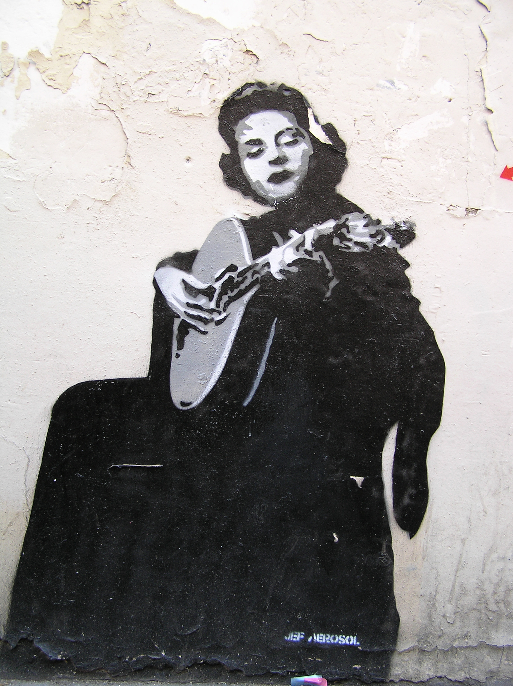
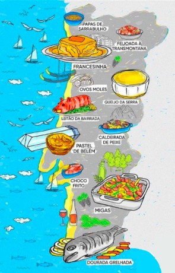
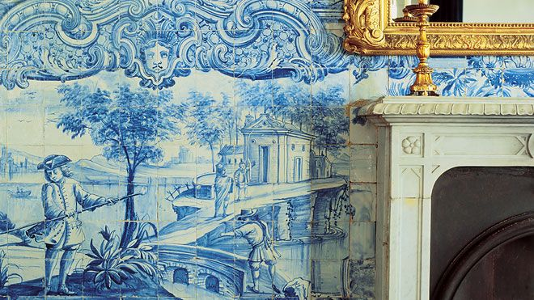
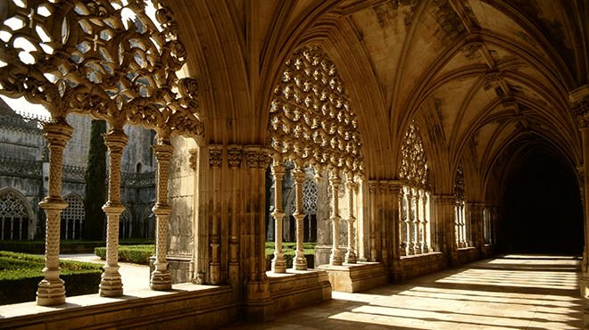
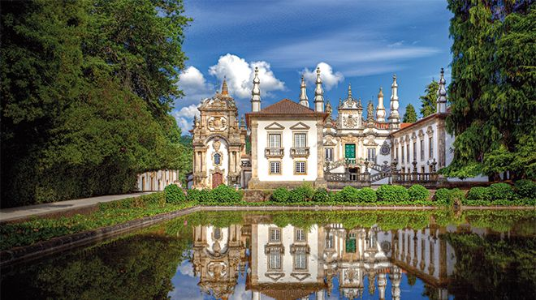

La culture portugaise est profondément liée à la localisation géographique du pays et à son parcours historique et son ouverture sur la mer l'a mené aux Grandes Découvertes.
Fado

Bien que les origines soient difficiles à retracer, le Fado est aujourd'hui généralement considéré comme une simple forme de chanson qui peut concerner n'importe quoi, mais qui doit suivre une certaine structure traditionnelle. Dans la croyance populaire, le Fado est une forme de musique caractérisée par des airs et des paroles lugubres, souvent sur la mer ou la vie des pauvres, et imprégné d'un sentiment de résignation, de destin et de mélancolie. Ceci est vaguement capturé par le mot Portugais "Saudade", ou nostalgie, symbolisant un sentiment de perte (une perte permanente et irréparable et ses dommages à vie).
Gastronomie

Le Portugal vit aujourd’hui une véritable explosion de saveurs, où les nouveaux chefs allient produits et recettes traditionnelles avec la cuisine contemporaine. Cinq icônes de notre gastronomie méritent d'être soulignés : le meilleur poisson du monde ; la cataplana (sorte de bouillabaisse servie dans un fait-tout en cuivre - symbole vivant de la cuisine méditerranéenne) ; le vin de porto (inimitable) ; le pastel de nata (« gâteau divin » - sorte de petit flan dans une pâte feuilletée) ; nos chefs (qui fusionnent la tradition, l'innovation et la créativité). Ce qui va de concert avec les principes que l'Unesco a retenus pour considérer le Portugal comme garant de la diète méditerranéenne. Tout cela allié au fait que nous aimons recevoir et nous réunir autour de la table, faisant de chaque repas un moment de partage.
Azulejo

Il s’agit d’une présence constante dans l’architecture portugaise et aucun autre pays ne compte une utilisation aussi importante en décoration d’intérieurs et d’extérieurs de maisons, d’églises, de palais, etc. D’origine musulmane, les azulejos ont été initialement produits au Portugal à la fin du XVe siècle, et ont connu une plus grande production au XVIIIe siècle, avec l’introduction de l’azulejo bleu et blanc.
Le Musée National de l’Azulejo, situé à Lisbonne, retrace son histoire, mais il suffit de parcourir le pays en train pour les admirer dans les gares, dans les villes ou prendre le métro de la capitale pour y contempler les magnifiques exemples de cet art décoratif si caractéristique du Portugal.
Style manuélin

Alors que l’Europe entière se vouait à la construction de cathédrales gothiques, le Portugal introduisait dans l’architecture et la sculpture des éléments d’inspiration maritime et des symboles du pouvoir royal, tels que la sphère armillaire, pour ainsi créer un nouveau style, connu plus tard comme « style manuélin ». Le nom s’inspire du règne de Manuel Ier (1495-1521), qui marqua la période d’or des Découvertes portugaises. Les plus beaux exemples architecturaux sont par exemple le Monastère des Hiéronymites (Mosteiro dos Jerónimos), la Tour de Belém (Torre de Belém), le Monastère de Batalha (Mosteiro da Batalha) et le Couvent du Christ (Convento de Cristo), mais on peut retrouver dans tout le pays des constructions et des décorations aux traits manuélins, que ce soit dans des églises, des palais, des piloris et même dans l’architecture civile.
Baroque

Le style baroque est l’expression de la splendeur et de l’ostentation qui marquèrent le règne de Jean V (1707-1750), alors que l’or et les pierres précieuses venaient en abondance du Brésil et que débutait l’exportation du vin de Porto. Cette époque se caractérisa par de grands travaux, tels que le Couvent de Mafra (Convento de Mafra), l’aqueduc des Eaux Libres (Aqueduto das Águas Livres) à Lisbonne ou la Bibliothèque de l’Université de Coimbra (Biblioteca da Universidade de Coimbra), mais ce style se retrouve dans tout le pays, comme par exemple dans les temples décorés de boiseries dorées et d'azulejos. L'architecte Nasoni est l’auteur de plusieurs travaux dans la région nord, comme par exemple la Tour et l’Église des Clercs (Torre e Igreja dos Clérigos), à Porto, ou le Palais de Mateus (Palácio de Mateus), à Vila Real, mais des œuvres baroques peuvent également être admirées au sein de la fastueuse collection du Musée des Carrosses (Museu dos Coches), à Lisbonne.